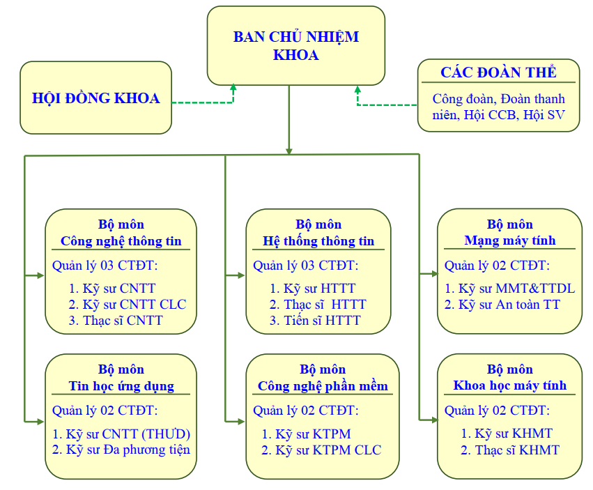
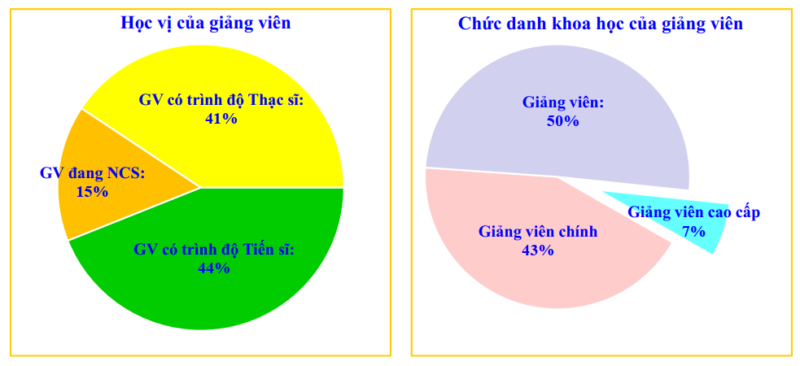
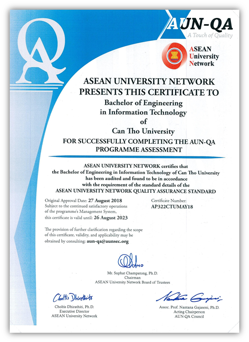

TỔNG QUAN VỀ KHOA CÔNG NGHỆ THÔNG TIN VÀ TRUYỀN THÔNG
1. Lịch sử hình thành và phát triển Khoa
Khoa Công nghệ thông tin và truyền thông (CNTT&TT) được thành lập năm 1994 trên cơ sở nâng cấp từ Trung tâm Điện tử & Tin học (được thành lập năm 1990). Kể từ khi thành lập, Khoa đã trở thành một trong bảy khoa trọng điểm về lĩnh vực CNTT&TT của Việt Nam. Khoa có nhiệm vụ đào tạo nguồn nhân lực lượng cao, góp phần tích cực vào sự phát triển của nền công nghiệp công nghệ thông tin Việt Nam; đồng thời thực hiện nghiên cứu khoa học và chuyển giao công nghệ tiên tiến, góp phần đẩy mạnh nghiệp công nghiệp hóa, hiện đại hóa đất nước.
Trải qua gần 30 năm xây dựng và phát triển, thương hiệu Khoa CNTT&TT của Trường ĐHCT đã trở thành địa chỉ uy tín trong đào tạo nguồn nhân lực đáp ứng nhu cầu phát triển kinh tế xã hội. Hiện, Khoa đang sở hữu cơ sở vật chất khang trang và đội ngũ giảng viên vững mạnh toàn diện. Đặc biệt, trong những năm gần đây, Khoa đã vinh dự nhận được nhiều danh hiệu cao quý, như Cờ thi đua và Bằng khen của Bộ Giáo dục và Đào tạo, Bằng khen của Thủ tướng và Huân chương lao động hạng ba của Chủ tịch nước.
2. Sứ mệnh, tầm nhìn, giá trị cốt lõi và triết lý giáo dục của Khoa
Sứ mệnh của Khoa là đào tạo, nghiên cứu khoa học và chuyển giao công nghệ trong lĩnh vực CNTT&TT và các lĩnh vực liên quan, phục vụ sự nghiệp công nghiệp hóa và hiện đại hóa đất nước.
Tầm nhìn đến năm 2025, Khoa CNTT&TT là trung tâm đào tạo và nghiên cứu khoa học mạnh trong cả nước về lĩnh vực CNTT&TT và các lĩnh vực liên quan, đóng vai trò nòng cốt trong vùng Đồng bằng sông Cửu Long và khu vực phía nam, đạt chuẩn chất lượng đào tạo theo các chuẩn mực của các trường đại học tiên tiến và các tổ chức kiểm định chất lượng giáo dục trong khu vực và thế giới.
Giá trị cốt lõi của Khoa là “Đồng thuận - Tận tâm - Chuẩn mực - Sáng tạo”.
Triết lý giáo dục của Khoa là “Tư duy, Sáng tạo, Lấy người học làm trung tâm”.
Trong những năm gần đây, Cuộc Cách mạng công nghiệp lần thứ tư với sự đột phá chuyển đổi số trong lĩnh vực CNTT&TT đã và đang tạo ra những tác động mạnh mẽ đến tất cả các lĩnh vực của đời sống kinh tế xã hội ở nước ta, kéo theo nhu cầu nguồn nhân lực CNTTT&TT tăng cao liên lục. Bắt nhịp với bối cảnh trên, Khoa đã luôn không ngừng đẩy mạnh phát triển các hoạt động đào tạo, nghiên cứu khoa học, hợp tác quốc tế, cơ sở vật chất và nguồn nhân lực cả về chất lượng lẫn quy mô.
3. Cơ cấu tổ chức và nguồn nhân lực
Về cơ cấu tổ chức, Khoa hiện có 6 bộ môn (Công nghệ thông tin, Tin học ứng dụng, Khoa học máy tính, Công nghệ phần mềm, Hệ thống thông tin, Mạng máy tính và Truyền thông) và 4 đơn vị trực thuộc (Trung tâm Điện tử & Tin học, Phòng kỹ thuật, Văn phòng Khoa, Không gian sáng chế).

Về nguồn nhân lực, Khoa hiện có 108 cán bộ, trong đó có 5 phó giáo sư, 35 tiến sĩ, 14 nghiên cứu sinh và 37 thạc sĩ. Đội ngũ giảng viên của Khoa, phần lớn được đào tạo tại các trường uy tín ở nước ngoài, rất nhiệt tình, năng động, sáng tạo trong giảng dạy và nghiên cứu khoa học. Tất cả giảng viên của Khoa đều có trình độ chuyên môn từ thạc sĩ trở lên, trong đó 44% giảng viên có trình độ tiến sĩ và 15% giảng viên đang học nghiên cứu sinh, với 50% là giảng viên chính và giảng viên cao cấp.

4. Quy mô và ngành nghề đào tạo
Khoa hiện có 07 chuyên ngành kỹ sư, 03 ngành thạc sĩ và 01 ngành tiến sĩ, với tổng quy mô hiện tại là hơn 4.810 sinh viên bậc đại học và 219 sinh viên bậc sau đại học. Tất cả các ngành đào tạo của Khoa đã được kiểm định nội bộ theo các tiêu chuẩn và tiêu chí của Bộ Giáo dục và Đào tạo. Đặc biệt, Khoa có 3 ngành đào tạo bậc đại học đạt chuẩn kiểm định quốc tế AUN-QA: ngành Công nghệ thông tin, ngành Kỹ thuật phần mềm và ngành Mạng máy tính & Truyền thông dữ liệu. Khoa luôn chú trọng tạo dựng môi trường đào tạo tốt, gắn kết đào tạo với các hoạt động NCKH thực tiễn, tạo ra nguồn nhân lực có chất lượng cao, đáp ứng tốt nhất nhu cầu xã hội.

Chứng nhận đạt chuẩn kiểm định quốc tế AUN-QA
5. Hoạt động nghiên cứu khoa học
Khoa CNTT&TT luôn chú trọng đẩy mạnh hoạt động NCKH. Theo đó, hàng năm, các cán bộ của Khoa đã xuất bản gần 100 bài báo khoa học, cũng như thực hiện nhiều đề tài NCKH được tài trợ kinh phí từ nhiều cơ quan tổ chức khác nhau.
Trong những năm gần đây, Khoa CNTT&TT tăng cường hợp tác nghiên cứu khoa học và đào tạo có hiệu quả với nhiều tổ chức và trường đại học trong nước và quốc tế. Các đối tác nghiên cứu và đào tạo quan trọng của Khoa là Đại học Claude Bernard Lyon 1, Đại học La Rochelle, Đại học Bretagne Occidentale, Đại học Nantes, Viện Nghiên cứu & Phát triển Pháp (IRD), Đại học Bournemouth, Viện Công nghệ Kyoto, Đại học Chung-Ang. Qua đó, các dự án nghiên cứu khác nhau đã được thực hiện thành công. Hai trong số các dự án nổi bật mà Khoa CNTT&TT là thành viên là JEAI DREAM (vietnam.ird.fr/l-ird-au-vietnam/jeai/jeai-dream-umi-209-ummisco-2011-2014) và AniAge (euh2020aniage.org).
Song song đó, hoạt động học thuật trong sinh viên cũng không ngừng được đẩy mạnh. Trong những năm gần đây, sinh viên của Khoa đã đạt được nhiều thành tích cao trong NCKH, cũng như trong các cuộc thi Olympic, qua đó góp phần làm tăng thương hiệu của Trường ĐHCT trên bình diện quốc gia và quốc tế.
6. Hoạt động quan hệ hợp tác
Trong các năm qua, Khoa đã đẩy mạnh quan hệ hợp tác với nhiều đối tác truyền thống từ Pháp và Canada, đồng thời tăng cường mở rộng hợp tác với các đối tác mới từ Anh, Mỹ, Úc và Châu Á. Bên cạnh đó, Khoa đã chủ động tìm kiếm, triển khai và thực hiện tốt 2 dự án quốc tế, qua đó nhiều giảng viên và sinh viên có cơ hội đi học tập/nghiên cứu ở nước ngoài.
Khoa CNTT&TT hợp tác với nhiều đối tác công nghiệp CNTT để đào tạo các kỹ năng chuyên môn về CNTT cho sinh viên và phát triển các sản phẩm CNTT. Song song đó, Khoa đã và đang hợp tác sâu rộng với nhiều tỉnh, thành phố ở Việt Nam trong việc ứng dụng CNTT vào sản xuất và đời sống hàng ngày, và chuyển giao công nghệ CNTT.
Các hoạt động hợp tác với đối tác doanh nghiệp trong và ngoài nước được đẩy mạnh và mở rộng, đặc biệt là thông qua hai sự kiện thường niên “Ngày hội việc làm CNTT”. Khoa đã ký kết MoU với hơn 30 doanh nghiệp trong và ngoài nước. Định kỳ hàng năm, Khoa triển khai rà soát và đánh giá các MoU đã ký kết để đưa ra kế hoạch cụ thể, nhằm đẩy mạnh hơn nữa quan hệ hợp tác với các đối tác. Qua đó, tạo cầu nối hiệu quả giữa nhà trường và doanh nghiệp, góp phần nâng cao thương hiệu của Khoa. Thông qua các hoạt động này, Khoa nhận được nhiều tài trợ của các công ty, từ học bổng cho sinh viên cho đến các thiết bị nghiên cứu.
7. Cơ sở vật chất phục vụ đào tạo
Khoa hiện có nhiều phòng thực hành/thí nghiệm với trên 1300 máy tính và trang thiết bị hiện đại phục vụ cho việc giảng dạy và nghiên cứu. Đặc biệt, Khoa có không gian tự học, sáng tạo và khởi nghiệp, là nơi lý tưởng cho hoạt động học tập và rèn luyện của sinh viên.
Bên cạnh đó, nguồn học liệu phục vụ học tập và nghiên cứu rất phong phú. Trung tâm học liệu của Trường (với diện tích 12.276 m2, 4.800 m2 phòng đọc, 900 chỗ ngồi, 440 máy tính) có hơn 30.000 đầu sách, nhiều tạp chí/giáo trình điện tử và nhiều phương tiện nghe nhìn hiện đại. Đặc biệt, Thư viện Khoa (với 3.431 đầu sách, tạp chí, ebook và cơ sở dữ liệu điện tử) là nguồn tư liệu quí báu hỗ trợ đắc lực cho công tác học tập, giảng dạy và nghiên cứu khoa học.
8. Hoạt động ngoại khóa của sinh viên
Với môi trường học tập tiên tiến và hội nhập, sinh viên Khoa CNTT&TT bắt nhịp rất tốt trong cả các hoạt học thuật lẫn hoạt động ngoại khóa. Bên các hoạt động ngoại khóa (như đoàn thanh niên, mùa hè xanh, giao lưu quốc tế, …), sinh viên Khoa đã đạt được nhiều thành tích ấn tượng trong các cuộc thi quốc gia và quốc tế (như cuộc thi Olympic Tin học, cuộc thi nghiên cứu khoa học và khởi nghiệp sinh viên, …).